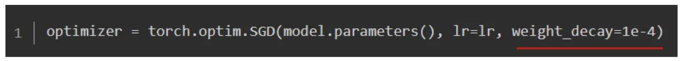
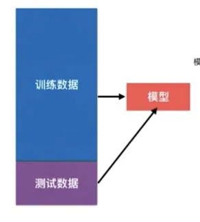
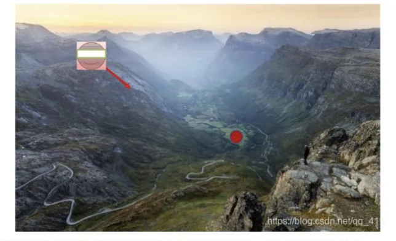
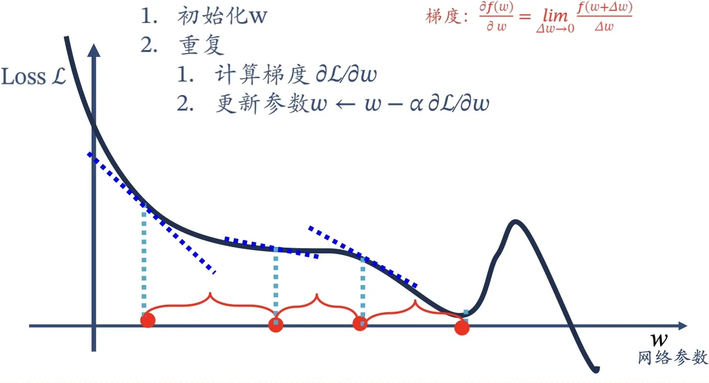
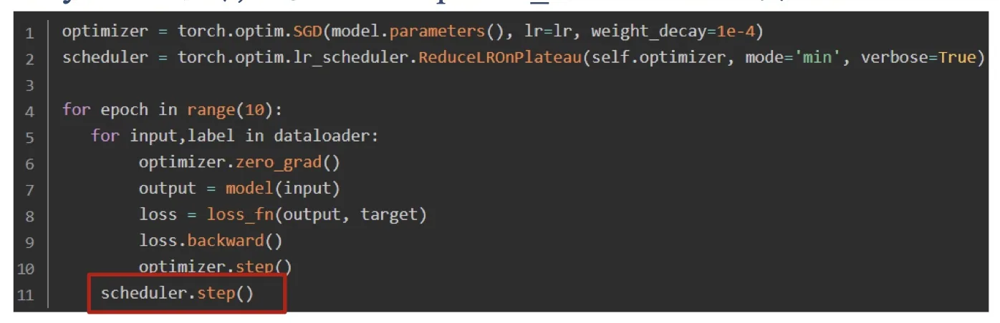

计算机视觉 · 第 5 章 前馈神经网络
5.7 参数学习与模型训练
有了损失函数，接下来的问题是怎么把它降下去。这一节讲三件事：把「学参数」这件事写成一个带正则项的结构化风险函数；用梯度下降给出参数的更新公式，并比较全量、随机、批量三种做法；最后是大半个深度学习实践的核心——学习率怎么设、怎么随训练进程衰减。中间还会遇到两个绕不过去的现象：欠拟合与过拟合。
1. 参数学习：结构化风险函数
给定训练集 D = {(x(n), y(n))}n=1N，将每个样本 x(n) 输入给前馈神经网络，得到网络输出 ŷ(n)，它在数据集 D 上的结构化风险函数由两部分组成：
- 经验风险：训练集上各个样本损失的平均值，衡量「拟合数据拟合得好不好」；
- 正则化项：对参数规模的惩罚（常见形式是 (1/2)λ‖W‖²F，λ 是正则化系数），衡量「模型是不是过于复杂」。
课件给出的完整式子见图 1。把这两项加在一起，是要在「拟合训练数据」和「别把参数养得太大」之间取得平衡——后者正是抑制过拟合的手段，这一点下一段就会看到原因。只把经验风险压到最小，模型会倾向于记住训练集里的噪声。

2. 欠拟合与过拟合
训练过程中最容易出现的两种毛病，判断标准都在「训练集」与「测试集」的对比上：
- 欠拟合：在训练集上模型效果就很差。连训练数据都没学会，说明模型能力不足（太简单、层数太少、训练不够）。
- 过拟合：在训练集上误差较小，但是在测试集上误差较大，即模型的泛化能力差。模型把训练集里的偶然噪声也当成规律记住了。

注意两者的方向是相反的：欠拟合要增加模型能力，过拟合要限制模型能力。所以「模型越复杂越好」是错的——这也解释了为什么结构化风险函数里要有正则化项。
3. 参数怎么更新：梯度下降
网络参数可以通过梯度下降法来进行学习。在梯度下降方法的每次迭代中，第 l 层的参数 W(l) 和 b(l) 的更新方式为：
W⁽ˡ⁾ ← W⁽ˡ⁾ − α · ∂R/∂W⁽ˡ⁾ b⁽ˡ⁾ ← b⁽ˡ⁾ − α · ∂R/∂b⁽ˡ⁾
其中 α 是学习率，决定每一步走多大；偏导数由反向传播算法算出（下一节）。直观地说：梯度指向上坡方向，所以往它的反方向走一小步，损失就会下降一点；α 太大容易来回震荡甚至发散，太小则收敛太慢。


4. 三种梯度下降
每次更新参数时用多少样本来估算梯度，是一个工程上非常关键的选择。课件比较了三种做法：
- 梯度下降（全量）：计算完所有的样本损失后，根据梯度值更新权重。也就是所有的样本都有贡献、都参与调整权重，其计算得到的是一个标准梯度——方向最准；但如果样本量很大，计算成本很高。
- 随机梯度下降（SGD，每次一个样本）：随机也就是用样本中的一个例子来近似所有的样本，计算损失来调整权重。虽然计算很快，但是由于计算得到的并不是准确的梯度值，容易陷入到局部最优解中。
- 批量梯度下降（Mini-batch）：一种折中的方法，使用一些小样本（minibatch，一般取 2 的 n 次幂，如 32、64、128）来近似全部样本，然后用 minibatch 来估算误差总和以及实际梯度。
课件明确说到：批量梯度下降是深度学习中最常见的优化器。它既有随机性带来的「抖动」（这种抖动反而有助于跳出较差的局部区域），又让每次更新利用了足够多的样本，因此方向不会太离谱，还能充分利用硬件的并行能力。
5. 把训练循环写出来
课件把训练过程写成一个函数（图 5 是任务 B 版本）：外层循环是 epoch，每个 epoch 先把数据洗牌；内层循环按 batch_size 分批，每批在一个 GradientTape 里算损失，再由它求出所有参数的梯度，最后用 assign_sub 沿梯度反方向更新参数。任务 A 只有两组参数，写成：
def train(model, x, y, learning_rate, batch_size, epoch):
for e in range(epoch): # 次数
tmp = list(zip(x, y)) # 洗牌
random.shuffle(tmp)
x, y = zip(*tmp)
for b in range(0, len(x), batch_size): # 批量
with tf.GradientTape() as tape: # 梯度
loss_value = loss(model(x[b:b + batch_size]),
y[b:b + batch_size])
dW, db = tape.gradient(loss_value, [model.w, model.b])
model.w.assign_sub(dW * learning_rate) # 更新参数
model.b.assign_sub(db * learning_rate)任务 B 的结构完全一样，区别只在参数有六组：tape.gradient 一次求出 dW1、db1、dW2、db2、dW3、db3，再逐个 assign_sub。课件还给出了一个 PyTorch 版本的完整代码示例，思路同样是「前向算损失 → 反向求梯度 → 优化器更新」。

6. 学习率的影响与设置建议
（1）学习率太大太小都不行
学习率决定了参数更新的步长，它是最重要的超参数之一。课件用一页图专门展示学习率的影响：太小则损失下降缓慢、训练半天还在原地；太大则损失来回震荡，甚至越走越远。判断「学习率是不是合适」，看的正是损失曲线在训练过程中的形状。
（2）设置建议：前大后小
课件的建议是：网络训练初期学习率大一些，使得网络收敛迅速；在训练后期学习率小一些，使得网络更好地收敛到最优解。这就像下山：远处可以大步走，快到谷底时得小步挪，否则容易跨过去甚至来回震荡。
（3）学习率衰减的实现方式
具体实现上，课件给出两大类做法。第一类是使用库函数进行调整。以 PyTorch 为例，通过 torch.optim.lr_scheduler 接口实现，常见的有：
- 等间隔调整（StepLR）：每训练 step_size 个 epoch，学习率调整为 lr = lr × gamma；
- 多间隔调整（MultiStepLR）：学习率的调整间隔不相等，milestone 是一个列表参数，表示多个学习率需要调整的 epoch 值，如 milestones = [10, 30, 80]；
- 指数衰减（ExponentialLR）：学习率呈指数型衰减，每训练一个 epoch，lr = lr × γepoch；
- 余弦退火（CosineAnnealingLR）：T_max 表示学习率下降到最小值时的 epoch 数，即当 epoch = T_max 时，学习率下降到余弦函数的最小值；当 epoch > T_max 时，学习率将增大（这也是它和别的衰减策略最大的不同——它是会「回升」的）；eta_min 表示学习率调整的最小值；
- 根据指标调整（ReduceLROnPlateau）：当某指标（loss 或 accuracy）在最近几个 epoch 中都没有变化时，调整学习率。
第二类是手动调整：自己按 epoch 数或指标设置学习率，灵活但没有库函数省事。
最后是顺序问题，很容易写错：参数是每个 batch 计算之后就要更新，因此 optimizer.step() 要放在梯度计算之后；而学习率是每个 epoch 结束后更新，因此 scheduler.step() 要放在一个 epoch 结束之后的位置（图 5）。
本节小结
- 参数学习的目标函数是结构化风险：经验风险（训练集上的平均损失）+ 正则化项（如 (1/2)λ‖W‖² 惩罚过大的权重），两项分别对应「拟合数据」与「别太复杂」；
- 欠拟合是训练集上效果就差，要增强模型能力；过拟合是训练集好、测试集差，泛化能力不足，要靠正则化、更多数据、更简单的模型等手段抑制；
- 更新公式 W⁽ˡ⁾ ← W⁽ˡ⁾ − α ∂R/∂W⁽ˡ⁾、b⁽ˡ⁾ ← b⁽ˡ⁾ − α ∂R/∂b⁽ˡ⁾：沿梯度反方向走一步，α 是步长；
- 三种梯度下降：全量最准但贵，随机最快但方向不准、易陷局部最优，批量（minibatch，32/64/128）是折中，也是深度学习里最常用的；
- 学习率「前大后小」：初期大一些收敛快，后期小一些收敛稳；衰减既可用库函数（StepLR、MultiStepLR、ExponentialLR、CosineAnnealingLR、ReduceLROnPlateau），也可手动调整；
- 顺序铁律：optimizer.step() 每个 batch 之后调用（更新参数），scheduler.step() 每个 epoch 结束后调用（更新学习率）。